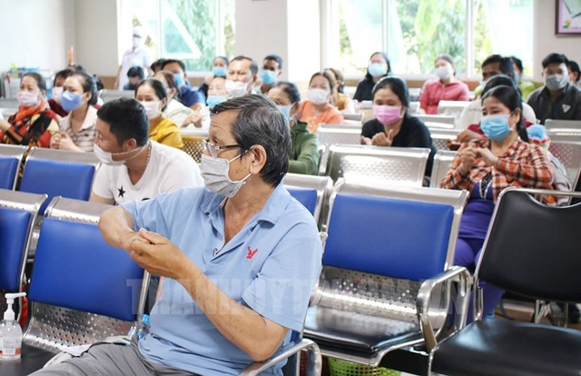

Sở Y tế TPHCM cảnh báo, trong bối cảnh số ca mắc COVID-19 đang tăng và biến
thể EG.5 đang phổ biến ở một số nước, nguy
cơ số ca mắc COVID-19 tại thành phố gia tăng trở lại là khó tránh khỏi.
Sáng 15/12, Sở Y tế TPHCM phát đi cảnh báo nguy cơ số ca mắc COVID-19 tại
thành phố gia tăng trở lại, yêu cầu không
được chủ quan.
Theo Sở Y tế TPHCM, từ tháng 7/2023 đến tháng 11/2023, Sở tiếp tục phối hợp
với Tổ chức Oucru (Đơn vị nghiên cứu lâm
sàng Đại học Oxford), duy trì giám sát các biến thể của virus SARS-CoV2 trên
địa bàn thành phố. Theo đó, có 8 mẫu bệnh
phẩm có đủ tải lượng virus COVID-19 được giải mã gen, kết quả tất cả đều
thuộc biến thể của Omicron.
Cụ thể: XBB.1.9 (4 chủng), XBB.1.16 (2 chủng), BA.2.75 (1 chủng), BA.2.86.1
(1 chủng).
Như vậy, trong khi biến thể EG.5 là phổ biến nhất đang được ghi nhận tại 89
quốc gia thì biến thể này hiện vẫn chưa được
phát hiện tại TPHCM.

Sở Y tế TPHCM khuyến cáo người dân khi có triệu chứng hô hấp cấp tính
(sốt, ho khó thở,....) nên đeo khẩu trang, hạn
chế tiếp xúc với người khác.
Sở Y tế TPHCM cũng cho biết thêm, kể từ ngày có hiệu lực quyết định số
3896/QĐ-BYT của Bộ Y tế về việc điều chỉnh
COVID-19 từ bệnh truyền nhiễm thuộc nhóm A sang bệnh truyền nhiễm thuộc nhóm
B, trong hệ thống các bệnh viện của TPHCM
chưa ghi nhận các trường hợp mắc COVID-19 mới cần nhập viện điều trị.
Tuy nhiên, trong bối cảnh số ca mắc COVID-19 đang tăng ở một số nước
như hiện nay thì nguy cơ số ca mắc tại
thành phố gia tăng trở lại là khó tránh khỏi, nhất là vẫn còn một
biến thể EG.5 chưa xuất hiện trên địa bàn thành
phố trong khi lại là biến thể phổ biến tại các nước.
Trước tình hình này, Sở Y tế yêu cầu Trung tâm Kiểm soát bệnh tật
Thành phố (HCDC) tiếp tục phối hợp với Bệnh
viện Bệnh Nhiệt đới và Đơn vị nghiên cứu lâm sàng Đại học Oxford (OUCRU)
tăng cường giám sát ca bệnh, giám sát
các biến thể COVID-19 lồng ghép trong giám sát tác nhân viêm hô hấp
tính.
Đồng thời đẩy mạnh hoạt động truyền thông giáo dục sức khỏe trên
toàn thành phố. Các cơ sở điều trị
tăng cường chẩn đoán, phát hiện những trường hợp mắc COVID-19 trên
những bệnh nhân thuộc nhóm nguy cơ cao
để có chế độ chăm sóc, điều trị phù hợp theo hướng dẫn của Bộ Y tế
nhằm giảm thiểu thấp nhất nguy cơ biến
chứng hoặc tử vong. Các cơ sở cần đảm bảo việc sẵn sàng phân luồng
điều trị khi cần, tránh lây nhiễm chéo
trong bệnh viện.
Sở Y tế TPHCM khuyến cáo người dân khi có triệu chứng hô hấp cấp tính
(sốt, ho khó thở,....) nên đeo khẩu trang, hạn
chế tiếp xúc với người khác, đặc biệt là người cao tuổi hoặc có bệnh
nền. Người cao tuổi, người có bệnh nền
nặng như tiểu đường, tim mạch, những người có bệnh lý suy giảm miễn dịch,
phụ nữ có thai nên làm xét nghiệm sớm và tiêm
phòng vaccine phòng ngừa cúm, viêm phổi để chủ động phòng ngừa các bệnh lý
hô hấp khác.
Ngoài ra, những người đi, đến, về từ các nước đang có số ca mắc tăng nên tự
theo dõi sức khỏe, đeo khẩu trang; thường
xuyên rửa tay bằng nước sạch và xà phòng hoặc dung dịch sát khuẩn tay. Khi
trở về Việt Nam, người về từ nước ngoài cần
tự theo dõi sức khỏe, hạn chế tiếp xúc người thuộc nhóm nguy cơ mắc bệnh
nặng như người cao tuổi, người có bệnh nền nặng
như tiểu đường, tim mạch, người có bệnh lý suy giảm miễn dịch, phụ nữ có
thai...
TT Y tế Quận 10
Nguồn tin : Vân Nhi (suckhoedoisong.vn)